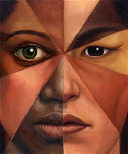
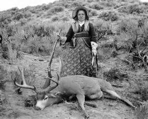
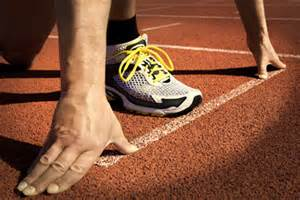

Stereotype Threat
"Stereotype Threat refers to being at risk of confirming, as self-characteristic, a negative stereotype about one's group."1
Social Tests by Steele and Aronson, 1995, "...showed that performance in academic contexts can be harmed by the awareness that one's behavior might be viewed through the lens of racial stereotypes."1
Since Steele and Aronson's research, hundreds of other studies have been conducted and it has been found that people operating under a stereotype threat paradigm can experience affects extending past low performance. Individuals tend to create self-handicapping strategies, reduce practice time in the area under question, feel less connected to the stereotyped group and as a result more disconnected in general, having a lessened interest in the subject area under consideration.
This phenomenon transverses race and extends to all groups. If one perceives that they are part of a group for which lower performance is believed to be typical, most individuals generate a negative self-image, feel disconnection, and experience a downgraded quality of output.
My Story:
I did not wear glasses as a kid, only because I did not know that I needed my eyesight corrected. See, I have Myopia, Near-Sightedness - I can see things close but not so well with increased distance. Things farther away become gradually less focused. I remember many times being picked last for teams in PE at school. I understood why, I couldn't hit the ball. I did not know that things were blurry, I thought that what I saw was what everyone saw. I remember being amazed that all of the other kids could hit the ball. When I got my first pair of glasses, I could now see, but I also enjoyed the occasionally "four-eyes" comment. Honestly, I was only called four-eyes a small handful of times, however poor performance in sports and this definite physical distinction created the opportunity for me to place myself into a stereotyped group. Since I excelled in academics, wore glasses, and had not done well in sports, I became the "studious-guy", not the "sports-guy". I remember there being a expectance for me to be smart, but not to necessarily be good at sports.
I have no doubts that this lowered my performance in the arena of sports.
I know that I questioned whether or not with more effort I might be good in sports or if maybe I was simply genetically "flawed" in the area of physical skill. I focused on my positive attributes, sharpened them, and steered clear of sports related situations. However, the questions remained, though their voices were whispers.
"He cannot know the answers, but neither can his rational self fully dismiss the questions. Together they raise a deeper question: Will his ... be a boundary to his experience, to his emotions, to his relationships?"2
I remember shying away from sports and doing all sorts of other activities: hiking, going to the beach, hanging out with friends, and the like. None of these activities required the physical accuracy that sports does.
After a few years, I realized that I had accepted a role, that I am not sure anyone had given me. I realized that there was a more full life out there and decided to fly in the face of expectations and grap it! I decided to become more physical. So, I started with individual physical activities, where you can only let yourself down, but not a team. I took up skimboarding with the local guys, all of whom where great at sports. After only a short period of time I became good, really good.
We started making our own boards, skimborading morning/evening 6 days a week during the summer, and skimboarding with the Pros. We were good! As a result, I saw myself differently.
I have never liked "boxes". I have never liked stereotypes. It has always seemed wrong when one group of people act in such a manner as to keep others down. I believe so strongly in our potential, that each of us is capable of greatness, that we can rise above and excel. Recently I have become even more aware that we limit ourselves. That most of us have more to give, more to offer, but we ourselves have placed a govern on our abilities. In many cases, that we are blind to the positive aspects of self, which seem apparent to those around us.
Plan of Action:
I am generally positive. I generally believe that I can achieve and contribute.
When I do feel down or less capable, I have choosen to think of the times when I have been successful and focus on these aspects which are true. They are based on past events and not my current emotions. I can then use this information to shape my next steps. In contrast, quite often, someone says something and I immediately accept it, almost don't question it, and let it shape me - this is the immature person taking control.
I know that I am not capable of everything, but one I am capable of much more than I realize now, and we collectively are capable of even more.
I help improve who I am, not only as a programmer, but also as a person, I like the specific, actionable, and kind idea of feedback. I have already started applying this in my day-to-day interactions and am receiving very positive feedback. I like people to "level" with me, and I naturally "level" with others, but the focus that these 3 words have provided is amazing.
I have found myself giving specific, actionable, and kind feedback and then asking for the same with people at work and at home.
Lastly, I want others to feel welcome. I try to make sure that those around me know that they are loved, respected, and valued. I realize that we are all individuals with something unique to contribute and that none of us is perfect. I try to connect with people where they are and easy their load while challenging them.